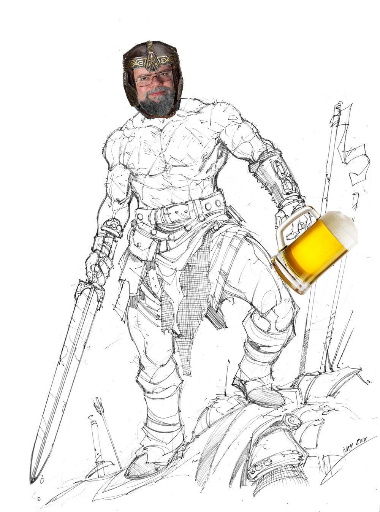

Welcome to Ginorio and Dragons! Ginorio and Dragons is an online text-based RPG. You set foot in the land of fantasy known as Valderia. Valderia is filled with many adventurers, but with those travellers comes villains and monsters. You play as Ralph K. Ginorio a true adventurer at heart. He has yet to make a name for himself, but with time and hard work he will become the world's most cherished hero. Now you must start your quest. Adventure awaits you!
Choose your race:
|
 | |
| Human | Elf | Dwarf |
Who are your parents?
 |
 |
 |
 |
 |
| Farmers | Nobles | Orphan | Merchants | Hunters |
Ever since you can remember you have been helping your father on his farm. With all this experience you began to get quite quick on your feet and began to build strength but because farm work does not pay much your family could barely pay for food, let alone your education.
You were born into a noble family who weren’t very well known. Your family would still pay for your education and require that you go to the occasional feast no matter how boring they seemed they did teach you how to talk to people.
Your parents were killed when you were a young child and since then you have had to learn to fend for yourself. Though you didn’t spend much time with people and could never study you learned to be quick on you feet in order to steal what you needed to live.
Your father was a successful merchant. When he wasn’t extremely busy he would teach you his trade and how to talk to people in a way that would benefit you. Because of your father’s wealth you were able to get a decent education.
Your father and mother came from a long line of hunters and as such taught you how to hunt at a very young age. This hunting experience made you quick on your feet and quite good with a bow.
| Warrior | Ranger | Mage |
Are you sure?
You are a